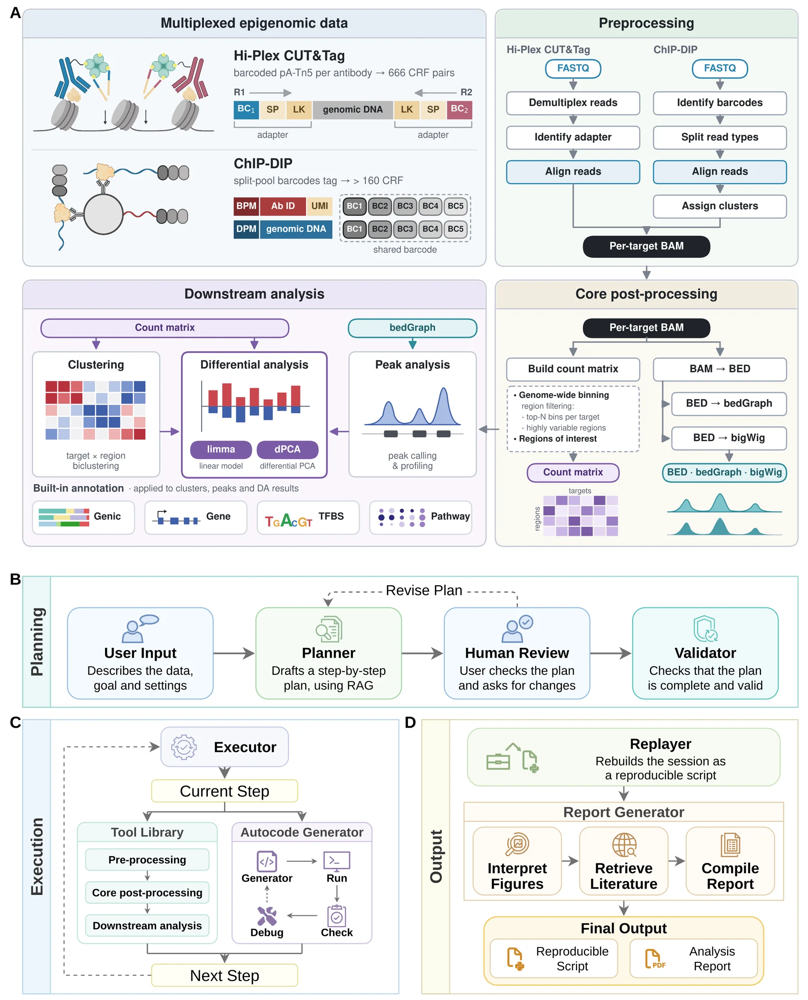
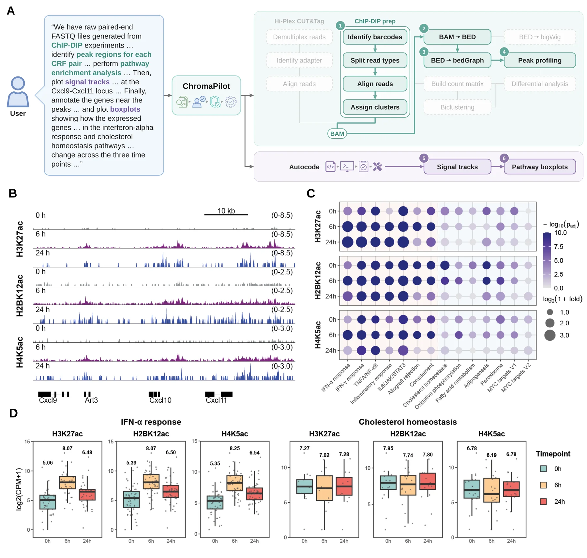
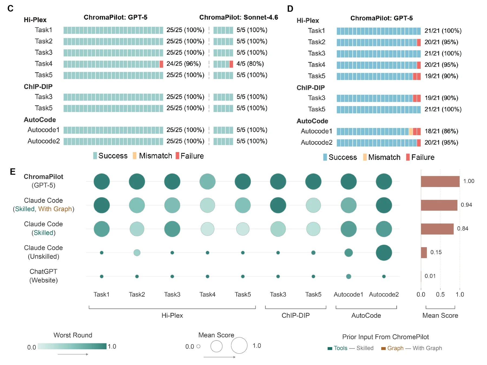

ChromaPilot
A Domain-Guided Multi-Agent Framework for Reproducible Multimodal Epigenomic Analysis
New multiplexed chromatin assays such as Hi-Plex CUT&Tag and ChIP-DIP need assay-specific processing that general-purpose AI agents struggle to get right. ChromaPilot binds a large-language-model multi-agent system to an expert-curated toolkit and a graph of which tool feeds which, and writes new code only on top of validated outputs. On seven standardized tasks run 25 times each it completed 96–100% of runs, and it agreed with expert reference analyses more consistently overall than Claude Code, ChatGPT or AutoBA.
The problem
Chromatin, the packaged form of DNA in the nucleus, is regulated by histone modifications, chromatin-modifying enzymes and transcription factors acting together. New multiplexed assays measure many of these chromatin regulatory factors (CRFs) in one experiment. Hi-Plex CUT&Tag uses 36 barcoded antibodies and records which pair of factors sat on the same DNA fragment, covering more than 600 CRF pairs; ChIP-DIP maps more than 160 DNA-associated proteins in parallel.
Turning these reads into results is hard. Barcodes must be decoded so that each fragment keeps the identity of its factor or factor pair, and the right downstream analysis changes with the question being asked. Doing this well takes both programming skill and detailed knowledge of what each assay measures.
Large language model (LLM) agents, which plan and run analyses from plain-language instructions, are an obvious candidate. But an agent writing a pipeline from scratch can produce code that runs without error and still returns a plausible but wrong result, for example by choosing an inappropriate preprocessing step or parameter. Of the eleven agent systems surveyed in the paper, none had native support for Hi-Plex CUT&Tag or ChIP-DIP.
The key idea
ChromaPilot splits the work between an expert-curated toolkit and an LLM multi-agent system. The tools carry the assay knowledge: validated code for decoding barcodes, aligning reads and building shared data formats, plus downstream methods for clustering, differential analysis, peak calling and annotation. The agents supply flexibility: they read a request, decide which tools to chain and in what order, and pass each output to the next step.
Two pieces of structure keep the agents on track. A dependency graph records which tool outputs are valid inputs to which later tools, so plans respect the order an assay requires. For requests the library does not cover, an Autocode module writes new code, but it starts from validated intermediate files rather than rebuilding the assay pipeline from scratch.
How it works
Each multiplexed assay has its own preprocessing chain that ends in one aligned-read (BAM) file per target or CRF pair; conventional ChIP-seq and CUT&Tag data enter as one target per library. From there, shared tools build signal tracks and region-by-target count matrices that feed biclustering, differential analysis (limma–voom or differential principal component analysis, dPCA), peak calling, and gene, transcription-factor-binding-site and pathway annotation. Around this toolkit, the agents work in stages:
- Planner: turns the request into a step-by-step plan using the tool specifications and the dependency graph, retrieving documentation when it needs more context.
- Human review and Validator: no plan runs until the user has approved it and automated checks confirm it is complete and executable.
- Executor: runs each step with a curated tool or hands it to Autocode, which generates a Python project, runs it, checks the result and corrects it up to five times before asking the user for help.
- Replayer and Report Generator: the finished session becomes a script that reruns the whole analysis without calling the language model, plus a report combining figures, interpretations and retrieved literature.

Three applications
Each application started from a plain-language request.
- Hi-Plex CUT&Tag (human K562 cells). From raw reads of two samples, the agent chained six curated operations, from building the barcode reference to biclustering. CRF-pair profiles fell into 4 clusters and genomic regions into 15, which were annotated with gene features, candidate regulatory elements and transcription-factor binding sites, all without generated code.
- ChIP-DIP (mouse dendritic cells at 0, 6 and 24 h after LPS, a bacterial molecule that triggers an immune response). Four curated steps produced acetylation peaks and pathway enrichment; two Autocode steps added custom signal tracks at the Cxcl9–Cxcl11 chemokine locus and expression boxplots for interferon-alpha response and cholesterol homeostasis genes. The tracks showed increased acetylation after stimulation.
- ENCODE ChIP-seq (GM23248 vs HCT116 cell lines). Ten histone marks were compared jointly with dPCA over 374,475 regions. The first two components explained 63.93% and 11.45% of the variance and separated the repressive mark H3K27me3 from active marks; matched RNA-seq data showed that, among differential regions, dPC1 tracked expression changes positively and dPC2 negatively.

Benchmark results
To test reliability, the study built nine tasks with expert reference answers: five nested Hi-Plex CUT&Tag tasks (alignment, signal tracks, biclustering, differential analysis and peak analysis), two ChIP-DIP tasks (target clustering and peak calling), and two Autocode tasks outside the tool library. Each output was scored from 0 to 1 against the reference with a metric suited to its type, such as Jaccard overlap for genomic regions or the adjusted Rand index for cluster labels.
- Standard prompts: with GPT-5 as the underlying model and 25 runs per task, six of the seven standardized tasks finished in all 25 runs and differential analysis in 24. Every completed run matched the expert reference exactly. With Claude Sonnet 4.6 (5 runs per task), only differential analysis missed a run.
- Prompts written by biologists: seven biologists wrote their own prompts after a brief introduction to each goal (3 runs each, 21 per task). Success stayed at 90–100% on the standardized tasks and was 86% and 95% on the two Autocode tasks.
- More samples: success stayed high as the input grew from 8 to 20 samples.
- Against other agents: averaged over the nine tasks, agreement with the reference was 1.00 for ChromaPilot, 0.94 for Claude Code given ChromaPilot's tools and dependency graph, 0.84 with the tools alone, 0.15 for Claude Code without them and 0.01 for ChatGPT used through its web interface. ChromaPilot scored highest, or tied for highest, on every task. AutoBA, a published bioinformatics agent, failed across the specialized tasks.
The Claude Code comparison separates two contributions. Giving a general coding agent the curated tools raised its agreement, and adding the dependency graph raised it further, especially on the Hi-Plex tasks. Without them, Claude Code often wrote code that ran but whose outputs did not match the reference.

Why it matters
ChromaPilot places assay knowledge in validated tools and leaves orchestration to the agents. The benchmark suggests that, for specialized assays, a script that runs without error is not evidence of a correct analysis, and that curated tools plus an explicit workflow graph narrow that gap. Every run also leaves a replayable script, so results can be inspected and reproduced without another model call.
The same pattern could carry over to new assays: developers encode validated preprocessing as tools, record which outputs feed which steps, and reuse the shared downstream modules. The study notes its limits: the evaluation covers a defined task suite built around two multiplexed assays and a small set of datasets and models, agreement with a reference measures faithful execution rather than biological validity, and generated reports still need expert review.